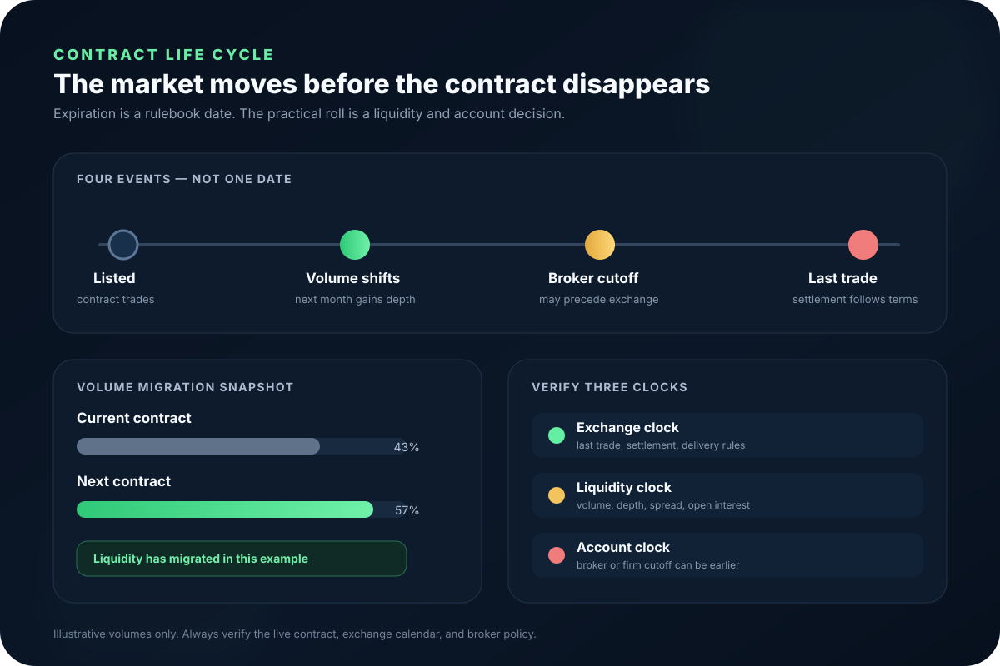

Contract month
The delivery or settlement month identified by the product root, a month code, and a year.
Futures contract life cycle
A futures contract does not become irrelevant on one universal “roll day.” Exchange rules, liquidity migration, and account cutoffs run on separate clocks. A sound roll decision verifies all three.

Start with the vocabulary
These terms can occur on different dates. Treating them as interchangeable is how a trader ends up on the wrong symbol, misreads a chart gap, or carries a position into a restricted window.
The delivery or settlement month identified by the product root, a month code, and a year.
The final time the expiring contract may trade under the exchange's product rules.
The end of the contract's trading life and transition into the applicable final-settlement process.
The contract-defined process that financially resolves remaining obligations after trading terminates.
The transfer of the commodity, currency, or delivery instrument when a physically settled contract remains open.
Closing exposure in one contract month and opening equivalent exposure in a later month.
The governing principle
The exchange publishes the contract's listing, last-trade, settlement, and delivery terms. The market decides when most active trading shifts to a later month. Your broker or prop account decides how late your account may hold or trade the expiring month.
The earliest binding constraint controls your action. A liquid expiring contract does not override a broker cutoff, and a distant exchange date does not make a thin order book suitable for execution.
Last trade, final settlement, delivery period, holiday adjustments, and product rules.
Volume, open interest, bid-ask spread, depth, queue, and the active contract month.
Broker liquidation notices, delivery restrictions, prop-firm rules, and platform symbol handling.
Turn three clocks into one action
A volume crossover is evidence about liquidity, not automatic permission to hold or a command to roll. Start with the earliest verified constraint, then apply the branch that matches the account's actual position state.
Flat: either month may be usable after comparing spread and depth.
Intraday: trade only the book that meets the execution plan, then finish flat.
Carrying: document the exit or roll trigger before the account cutoff.
Action: monitor both books; do not infer a universal roll date.Flat: route new setups to the verified active month.
Intraday: change the chart, DOM, strategy and order ticket together.
Carrying: compare a spread order with two separate legs and price both.
Action: plan the migration; liquidity alone does not waive account rules.Flat: do not open the restricted month.
Intraday: a same-day exit assumption is not permission if the notice prohibits entry.
Carrying: close or roll within the documented window; confirm completion.
Action: the account rule controls even when the contract still trades.Flat: keep the order unsent.
Intraday: do not rely on an auto-selected front month or continuous symbol.
Carrying: contact the broker before the uncertainty reaches a deadline.
Action: stop and verify the exact exchange and account documents.Decode the symbol before the chart
The month code is standardized, but the complete symbol format can differ by broker and platform. Some interfaces use a one-digit year; others use two or four digits. Verify the selected instrument in the order ticket—not only in the chart title.
Symbol example only. Confirm the exact naming convention used by your trading platform, data provider, and broker.
Rolling preserves exposure—not the contract
A roll is not a symbol rename. It is an exit in the current month and a new entry in a later month. The old trade realizes its own profit or loss. The new trade starts with a new entry price, a different contract month, and potentially different liquidity.
Rolling a long position
The first leg closes the existing long. The second establishes a new long in the selected later contract.
Rolling a short position
The first leg closes the existing short. The second establishes a new short in the selected later contract.
| Method | How it works | Primary execution issue | What to verify |
|---|---|---|---|
| Two separate legs | Close the current month, then open the later month. | Market exposure can change between legs; fills may occur at different times. | Order sequence, available buying power, spreads, and slippage on both legs. |
| Calendar-spread order | Trade the price difference between the two months as one spread where supported. | The spread itself has a bid, ask, depth, tick, and matching process. | Correct spread direction, leg ratio, contract months, and broker/platform support. |
Interactive contract-transition worksheet
Enter a current and next contract plus a volume snapshot. The planner calculates the next contract's share of combined volume and the time remaining before your entered broker cutoff. It does not replace the official calendar or account agreement.
Calculated from your inputs
Volume share: next contract volume ÷ (current + next contract volume).
Entered cutoff: days to official last trade − broker lead time.
Boundary: the tool does not know holidays, delivery notices, account permissions, open interest, spread, depth, or current firm rules.
Follow the executable market
Raw daily volume is useful, but it is not the only execution signal. A later contract can lead in total volume while a particular time window still has weaker depth. Compare like-for-like conditions in both books.
Compare completed trading activity in the same session window. A single daily total can hide when the change occurred.
Use the exchange's published figure to see where outstanding positions remain. It is typically reported with a delay, not as a live queue.
Check the price cost to cross each market. Similar volume does not guarantee similar spreads.
Observe quantity near the inside market, while remembering that displayed orders can change or cancel.
Watch whether the contract can absorb the size and order type you intend to use without excessive price impact.
Confirm that the chart, DOM, strategy, bracket orders, and account are all using the intended contract month.
Contract terms control the consequence
“Futures expire” does not tell you what happens next. Read the current product specification and rulebook chapter. The product family, contract month, broker, and account permissions determine the operational risk.
| Example | Typical listing pattern | Settlement method | Primary expiration concern |
|---|---|---|---|
| ES / MES equity index | March quarterly cycle | Financially settled | Customary lead-month transition, final settlement procedure, and broker cutoff. |
| CL WTI crude oil | Calendar months | Physical delivery | Earlier delivery restrictions, last-trade calculation, and broker liquidation policy. |
| GC Gold | Selected delivery months | Physical delivery | Active-month migration, delivery eligibility, and termination of trading. |
| 6E Euro FX | Quarterly and serial listings | Physical currency delivery | Delivery procedure, value date, bank holidays, and broker restrictions. |
This table is an orientation aid, not a schedule. Product listings and rules can change. The current exchange product page, rulebook, expiration calendar, clearing notices, and account agreement are controlling.
Worked scenarios
An expiring contract trades 725,000 contracts while the next month trades 975,000 in the same measured window.
The next month leads this volume snapshot. That is evidence of migration—not proof that every time window, order size, broker, or strategy should switch immediately. Compare the live books and verify the official dates.
A trader long two current-month contracts wants to preserve market exposure. The roll requires selling two current-month contracts and buying two later-month contracts. If executed as separate legs, price can move between orders. A supported calendar-spread order can reduce that legging interval, but the spread still has its own bid, ask, depth, and fill risk.
The current trade's realized P&L is measured from its original entry to its exit. The new trade begins at the later contract's entry price. The difference between contract prices is the calendar spread, not a duplicate P&L calculation.
The official last trade is eight calendar days away, but the broker requires the account to exit five days before that date. The trader therefore has only three days until the entered account cutoff—not eight days of usable holding time.
Weekends, holidays, delivery notices, and product-specific rules can make a simple calendar-day subtraction incomplete. Use the broker's actual notice and exchange calendar.
The old contract settles at 81.40 and the next contract at 81.95. An unadjusted continuous chart that switches contracts can display a 0.55 jump even if neither contract made that move at the splice time.
A back-adjusted series may remove the visible gap from history. That helps some forms of analysis, but it also creates synthetic historical prices. Inspect the actual individual contracts when exact traded levels matter.
Research series are constructed
A continuous chart stitches multiple expiring contracts together. Its roll trigger and adjustment method are data-vendor choices. Two platforms can therefore show different historical prices, returns, indicators, and apparent gaps for the “same” continuous symbol.
| Method | What the series does | Useful for | Main limitation |
|---|---|---|---|
| Unadjusted splice | Switches from one contract to another without changing historical prices. | Seeing the actual quoted level of each contract segment. | Contract-month differences can appear as false jumps in the stitched series. |
| Back adjustment | Adds or subtracts roll differences from prior history to smooth joins. | Some trend, return, and indicator research. | Historical levels become synthetic and may not equal prices that ever traded. |
| Ratio adjustment | Scales prior history by the relationship between contracts. | Preserving proportional changes in some long histories. | Also creates synthetic levels and can alter absolute-price interpretation. |
| Volume or date rule | Chooses the splice when volume leads or on a scheduled date. | Automated data continuity. | Different rules can select different roll sessions and alter the result. |
Calendar date, days before expiry, volume crossover, open interest, or a vendor-specific rule?
Unadjusted, difference-adjusted, ratio-adjusted, or another proprietary method?
A strategy tested on a synthetic continuous history must still route to a specific live contract.
Common expiration mistakes
Using a fixed roll date for every product. Listing cycles, expiration rules, and liquidity migration differ.
Checking volume but not the account cutoff. A broker restriction can bind first.
Changing the chart but not the order ticket. Strategies and brackets can remain attached to the old month.
Reading a roll gap as a market move. The chart may have switched between differently priced contracts.
Assuming cash settlement removes all risk. Final settlement and expiration volatility can still produce material P&L.
Assuming “physical” means a truck appears immediately. Delivery uses detailed clearing instruments, locations, notices, and eligibility rules—but the obligation is real.
Legging a roll without pricing the interval. The market can move between the close and reopen.
Backtesting one continuous series and trading another. Different roll and adjustment rules can change signals.
Final decision checklist
Identify the exact product root, month code, year, and settlement method.
Open the current exchange product page, rulebook, and expiration calendar.
Read the broker or prop-account cutoff for that exact contract and account.
Compare current and next-month volume, open interest, spread, and depth.
Confirm the chart, DOM, strategy, and order ticket reference the same contract.
If rolling, verify long-versus-short direction, quantity, month pair, and order type.
Estimate commissions, spread, slippage, and the risk of legging two orders.
Document the continuous-chart roll and adjustment method used by research.
If any date, permission, or symbol is uncertain, stop and verify before transmitting the order.
Sources and methodology
The guide was checked against the sources below on August 17, 2026. Examples are explicitly hypothetical. Exact last-trade dates, settlement procedures, delivery rules, holiday adjustments, listed months, and broker cutoffs can change and must be verified for the specific contract.